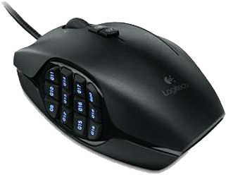
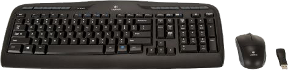

Logitech Gaming Keyboard G510s
Experience terrific control and navigation to your game units with this impressive Logitech keyboard. This G510s gaming keyboard is equipped with its gamepanel LCD to easily provide information on your system as well as VoIP data. It has custom RGB backlighting so you can surely press the right keys no matter how poorly lit your location is. In addition, it is packed with 18 programmable G-Keys to aid you execute complicated commands or actions during game plays. It allows precise and speedy control as you assign different functions. A built-in USB audio port is also there for hassle-free connection setup for your headset or speakers. The gaming keyboard is also multimedia friendly, offering dedicated controls on your volume, mute, play, forward, and many other buttons. Buy this Logitech gaming keyboard for seamless control today.
$129.99

Logitech 910-002864 G600 MMO Gaming Mouse
Logitech G600 910-002864 MMO Gaming Mouse
The Logitech G600 910-002864 MMO Gaming Mouse takes your everyday mouse navigation to an enhanced level. Featuring 20 buttons, the Logitech G600 910-002864 MMO Gaming Mouse is one of the easiest mouse to use out there. This gaming mouse is also equipped with a thumb panel, which is designed for quick and easy no-look navigation. But what makes this mouse stand out from the rest is its RGB illumination, which allows you to set different colors to pulse on and off. The Logitech G600 910-002864 MMO Gaming Mouse truly revolutionizes your mouse navigation experience.
$89.99

Logitech MK520 Wireless Desktop Set
Logitech® Wireless Combo MK520
Achieve high performance with convenience and control at your fingertips by opting for the Logitech® Wireless Combo MK520. It's a full-size keyboard that gives you the room you need to type comfortably, while the concave Incurve keys™ cradle your fingertips. The full-size mouse offers smooth, precise laser tracking and provides comfort and control with a hand-friendly, contoured design and soft rubber side grips. Hassle-free desktop with up to three years of battery life for the keyboard and one year for the mouse. Hence, place the order for the Logitech® Wireless Combo MK520 at the earliest!
Mad Catz MCB437050001/04/1 R.A.T.5 Gaming Mouse
The white-colored Mad Catz MCB437050001/04/1 R.A.T.5 Gaming Mouse lets you enjoy superb movement and control of your game. Dominate the gaming grounds and your foes as this USB gaming mouse is packed with exciting action buttons. This gaming mouse is made with a Lightweight Metal Chassis that guarantees enhanced durability and rigidity. Go for victorious precision as this white mouse brags a revolutionary laser-sensor with 5600 DPI, ensuring utmost accuracy on your cursor navigation. Also, it is equipped with 6 Programmable Buttons so you can enjoy a convenient way of executing various commands in your game. This high-end gaming mouse possesses 3 Cyborg modes as well, allowing you to toggle between three R.A.T. modes in just a single button. It even lets you assign or change button actions and access to up to 18 commands. Purchase the Mad Catz MCB437050001/04/1 R.A.T.5 Gaming Mouse and be a winner!
$79.99
MadCatz STRIKE 5 PC Gaming Keyboard
MadCatz PC S.T.R.I.K.E. 5 Gaming Keyboard US
Take your game to another level with the MadCatz PC S.T.R.I.K.E. 5 Gaming Keyboard US. This gaming keyboard comes with useful features like Wrist Rest, Programmable Keys, and Palm rest to give your hands a rest while dominating the game. It also comes with a backlit frame so you can perfectly see what you are typing even under low-light conditions. This MadCatz PC S.T.R.I.K.E. 5 Gaming Keyboard US supports most common OS such as Windows Vista, Windows XP, Windows 7, and Windows 8, offering a hassle-free integration of this keyboard. Plus, it comes with a fully modular design which offers unmatched customization options to enhance overall comfort while playing. Purchase the MadCatz PC S.T.R.I.K.E. 5 Gaming Keyboard US today!